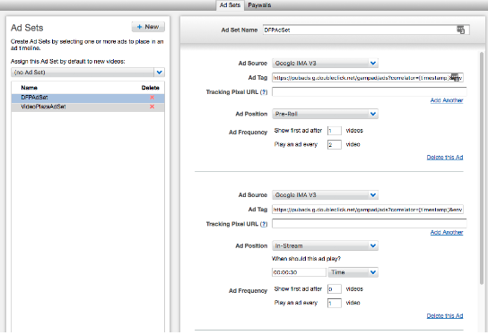
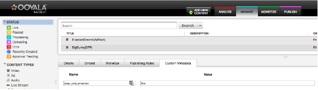

This document describes how to use SSAI for VOD assets for the two Ad Servers supported by Ooyala’s SSAI offering - Pulse and DFP. For information on integrating SSAI with the Ooyala Live stream, please see here. For an end-to-end guide to SSAI, please see here.
Complete the following steps to use Server Side Ad Insertion (SSAI) on your customer content with DFP Ad Server.
Steps
Enable SSAI VOD
You can enable the SSAI service for all assets in a Backlot account, or on a per-asset basis. The initial enablement of the SSAI service must be completed by the Ooyala team.
Onboard DFP Ad Provider
There are three ways to enable DFP SSAI for a given asset. If all three options are set for an asset, the SSAI service takes the highest priority out of the following three:
These are described in more detail below.
Ad Set Option (Priority 3)

Override Ad Set with Custom Metadata (Priority 2)
After content is associated with an Ad Set, ad breaks will be inserted using information from the Ad Set. This information can be overridden by adding custom metadata.When overriding Ad Set information for DFP, one option exists.
Add a custom metadata entry with the name custom_params. This field will contain json that contains the override information. If this field exists in custom metadata, all other custom metadata is ignored.
Example data for the custom_params field:
Ad positions are in milliseconds.
{
"google-ima-ads-manager": {
"metadata": {
"all_ads": [{
"position": "70000",
"tag_url": "https://pubads.g.doubleclick.net/gampad/ads?env=vp&gdfp_req=1&output=xml_vast3&sz=1280x720&unviewed_position_start=1&ad_rule=0&pmnd=0&pmxd=90000&pmad=15&d_impl=1&d_imp_hdr=1&iu=/7521029/live_ad_unit&url=[referrer_url]&cust_params=ibc_test_unit%3Dat&ss_req=0"
}, {
"position": "20000",
"tag_url": "https://pubads.g.doubleclick.net/gampad/ads?env=vp&gdfp_req=1&output=xml_vast3&sz=1280x720&unviewed_position_start=1&ad_rule=0&pmnd=0&pmxd=90000&pmad=15&d_impl=1&d_imp_hdr=1&iu=/7521029/live_ad_unit&url=[referrer_url]&cust_params=libc_test_unit%3Dma&ss_req=0"
}, {
"position": "10000",
"tag_url": "https://pubads.g.doubleclick.net/gampad/ads?env=vp&gdfp_req=1&output=xml_vast3&sz=1280x720&unviewed_position_start=1&ad_rule=0&pmnd=0&pmxd=90000&pmad=15&d_impl=1&d_imp_hdr=1&iu=/7521029/live_ad_unit&url=[referrer_url]&cust_params=ibc_test_unit%3Dsa&ss_req=0"
}, {
"position": "90000",
"tag_url": "https://pubads.g.doubleclick.net/gampad/ads?env=vp&gdfp_req=1&output=xml_vast3&sz=1280x720&unviewed_position_start=1&ad_rule=0&pmnd=0&pmxd=90000&pmad=15&d_impl=1&d_imp_hdr=1&iu=/7521029/ibc_ad_unit&url=[referrer_url]&cust_params=ibc_test_unit%3Dtj&ss_req=0"
}]
}
}
}
Backlot has a 2048 character limit for custom metadata fields. If the size of the json exceeds 2048 characters, you can put the data into multiple custom metadata entries using the naming convention custom_params1, custom_params2, etc. Each entry would have the same json structure with elements of all_ads array spread across the custom metadata entries.
Override custom metadata with Player Page level parameters (Priority 1)
Ad tags set in custom metadata information can also be overridden at the player page level. This method takes precedence over custom metadata.
Add a querystring entry with the name player_params. This field will contain url encoded json that contains the override information. If this field exists in querystring, all other querystring fields are ignored. An example is the same json described in the custom metadata for DFP.
Ad CMS Video Retention Policy
When the SSAI service encounters a new ad, it is downloaded from DFP server at run time. This means for the first few playback requests, the ad is not inserted while it is being transcoded to match the correct HLS bitrate of the VOD content. Ooyala’s AD CMS maintains these transcoded Ad Sets in storage.
Once an ad is transcoded, it is kept as long as the ad is being used. After seven continuous days of inactivity, the ad is deleted from Ooyala’s Ad CMS. After seven days of inactivity, if the ad is used again, SSAI service redownloads and re-transcodes it. This setting of seven days can be modified.
SSAI VOD enabling

Enabling ad provider
Create an Ad Set under the Monetize tab in backlot.
Using Ad Set and/or Custom Metadata
Example data for the custom_params field:
{
"videoplaza-ads-manager": {
"metadata": {
"all_ads": [{
"position": "7"
}],
"playerLevelCuePoints": "30,10,20",
"playerLevelShares": "cat",
"playerLevelTags": "tags"
}
}
}
The value for position is a bit field:So, a value of 7 means that ad breaks should exist for pre-roll, mid-roll, and post-roll.